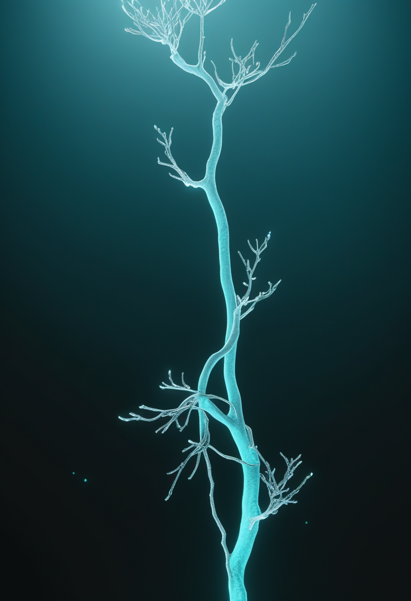

土曜日の便り。10月6日、ウガンダ・マサカ市でブンディブギョ型エボラの候補ワクチン『ChAdOx1 BDBV』の第1相試験が始まった。前号(No.102)で伝えたケニアへの飛来に続き、今日の変化は対抗手段が流行地域の隣国に届いたことにある。基盤の章ではDRCの最新集計とケニアの接触者追跡の進展を、自由の章ではParadromicsの耐久性データ更新と非侵襲BCIへの新たな投資を届ける。畏敬の章では中国の衛星が捉えたガンマ線バースト後の軟X線と、CERNが報告したクォーク・グルーオン・プラズマの『波』を、美の章では南アフリカの200万年前のホモ・エレクトスと、シベリアで見つかった絶滅ウシ科動物を取り上げる。命の章では、英伊で同時に動いたSMA新生児スクリーニングと、筋肉標的の新治療の米国承認を伝える。
10月6日、ウガンダ・マサカ市でブンディブギョ型エボラの候補ワクチン『ChAdOx1 BDBV』(オックスフォード大開発)の第1相試験で最初の接種が行われた。7月に英国で始まった健康成人50人を対象の人での試験に続くもので、安全性と免疫応答を確かめる段階にあり、感染を防げるかはまだ分からない。ブンディブギョ型には承認済みのワクチンも特効薬もなく、WHOの10月8日付発生情報ではDRCの確定例は8,728例・死亡4,205人(10月6日時点、致死率48.2%)。前号(No.102)で伝えたケニアへの飛来に続き、今日の変化は『対抗手段が流行地域の隣国に届いたこと』にある。詳細は基盤の章で。
イングランドでは10月から、SMAの新生児スクリーニングが実地評価として始まった。対象はまず同国の約72%で、残る6検査室は2027年10月から加わる計画。患者団体は前進を歓迎する一方、ウェールズと北アイルランドの新生児が今回含まれないことを課題として挙げている。イタリアでも10月9日、カターニャ大学病院がかかとから数滴の血液を採って当日検査する方式でSMAスクリーニングを開始した。同じ週に2つの国でスクリーニングが動いたが、全国一律の体制にはまだ届いていない。
SMN2標的治療と併用する初めての筋肉標的治療とされるアピテグロマブ(販売名ISEMBYLD)について、米国での承認が患者団体から10月7日に伝えられた。対象は2歳以上でSMN2標的治療を受けている人とされる。英国での承認申請は行われない見込みだという。承認日や適応の詳細は二次情報のみで確認でき、要確認の点が残る。開発元は欧州での審査と米欧での発売準備を2026年の重点に挙げていた。
Cure SMAの調査をAANEM 2026で発表した分析(10月3日)によると、生後90日より前に治療を始めた子どもの独歩率は73.2%で、それ以降に始めた子の36.7%を大きく上回った。早く始めた群は骨格筋や嚥下に関わる合併症も少なかった。観察研究のため因果関係は断定できないが、『早く見つけて早く治療する』ことの価値を裏づける数字が積み上がっている。
Biogenは9月22日の開発状況報告で、スピンラザ(ヌシネルセン)の後継となる核酸医薬salanersenについて、乳児から成人までを対象とした第3相試験(STELLAR-1・STELLAR-2・SOLAR)で、米国と日本の最初の参加者に投与したと明らかにした。年1回80mgの投与を前提に設計されており、FDAのブレークスルー・セラピー指定を受けている。前号で伝えた『試験開始』が、今回『実際の投与』へ進んだ。
インド最高裁は10月8日、高額で長期にわたるSMA治療を支える恒久基金の設置案を政府側に求めた。財源として企業のCSR(社会貢献)資金や政府補助金を例に挙げている。治療薬の種類が増えるほど、費用を誰が負担するかという制度の議論が重みを増す。
スクリーニングは国ごとに、治療薬は投与回数を減らす方向に、財源の議論は司法の場に。SMAを巡る動きは国によって速度も形も違う。
Paradromicsは10月8日、埋め込み型デバイスが前臨床(動物)で4年以上にわたり安定した神経記録とデコード性能を示したと発表した。同社の『Connexus』は、重い運動障害のある人の発話回復をねらうConnect-One早期実行可能性試験に進んでおり、FDAの承認を得て2人目以降の被験者への埋植が計画されている。企業発表であり詳細は要確認。
10月6日にステルス状態から姿を現したBridge Neurotechは、General Catalystなどから1,350万ドルを調達した。機能的超音波画像(fUSI)とAIによるデコードを組み合わせ、Butterfly Networkの『超音波オンチップ』を複数年契約でライセンスする。カリフォルニア州レッドウッドシティで健康な成人の試験を募集中だが、性能データはまだ公表されていない。
英国では運動ニューロン疾患・脊髄損傷・脳卒中の当事者や家族、医療者に、埋め込み型BCIの研究で答えてほしい問いを尋ね、上位10課題に絞り込む取り組みが進んでいる。10月8日の記事はこの『当事者中心』の手法を紹介した。最終的な優先課題リストはまだ確認できていない。
埋め込み型は『長持ちするか』、非侵襲型は『どこまで読めるか』、研究の進め方は『誰の問いから始めるか』。争点が多方向に広がっている。
Africa CDCは直近3週間の確定例が、震源地のイトゥリ州で約24%、北キブ州で約19%減ったと説明した。ただし同CDCのWessam Mankoula氏は過少報告の可能性に触れ、数字をそのまま減少と読まないよう促している。国境なき医師団は『流行は縮んでいるのではなく、移動している』と表現し、北キブ州は新規確定例の約4割を占め、8月末の24%から倍近くに増えたと指摘した。WHOの集計ではDRCの確定8,728例・死亡4,205人(致死率48.2%)、7州64保健区域に広がり47区域で感染が続く。
ケニア保健省のドゥアレ長官によると、初の輸入例に関わる接触者は57人で、うち10人をナイロビの警察病院で隔離し毎日症状を確認している。接触者は21日間隔離し陰性を確認してから解放する。エボラ用に指定した5施設の合計は141床で、15の入国地点で監視を強化した。カナダは10月9日に渡航情報を引き上げ、在ケニア米国大使館も10月6日に健康警告を出している。
10月6日、ウガンダ・マサカ市で候補ワクチン『ChAdOx1 BDBV』(オックスフォード大開発)の第1相試験の最初の接種が行われた。MRC/UVRI・LSHTMウガンダ研究ユニットが実施し、7月に英国で始まった健康成人50人の試験に続く。CEPIが両試験に資金を出しており、提供された治験用ワクチンの数は報道によって約3,000回分と4,000回分で食い違う(要確認)。安全性と免疫応答を確かめる段階で、感染を防げるかはまだ分からない。
米CDCは10月9日更新のデータで、2026年の確定麻疹を10月8日時点で4,080例と公表した。入院は414人(約10%)、年内に新たな集団発生が42件報告され、確定例の96%が集団発生に関連する。週あたりの増加は193例・5.0%で、前週の6.2%から鈍化した。死者数についてはCDCの公表値と州の報告に差があるとの指摘があり要確認。
数字が下がる場所と上がる場所が同時に存在し、対抗手段だけが新しく流行地域に届いた。『減った』を単純に信じられない一日になった。
中国科学院が主導する広視野X線衛星アインシュタイン・プローブが、短いガンマ線バーストEP250704aの後に約10分続く軟X線放射を捉えた。ガンマ線の閃光自体は約0.37秒。従来の望遠鏡はガンマ線の警報を受けてから向き直るため、この段階を取り逃していたとみられる。研究チームは高速回転する強磁場の中性子星(マグネター)が残骸だと解釈し、赤方偏移0.661で超新星の痕跡はなかったと報告した。成果はScience Bulletinに掲載。
CERNの大型ハドロン衝突型加速器でCMSが、クォークがクォーク・グルーオン・プラズマの中を進むときに残す『波』の証拠を報告した。個々の粒子がばらばらに散るのではなく、プラズマが一つの流体として応答していることを示すという。Zボソンを基準点として使い、約130億回の衝突データを解析した。成果はPhysics Letters Bに掲載。MITのYen-Jie Lee氏は、この問いが分野で長く議論されてきたと述べている。
NASAのジェシカ・メイア、ジャック・ハサウェイ、ESAのソフィー・アドノ、ロスコスモスのアンドレイ・フェジャーエフの4人は、2月13日に打ち上げられ約8カ月の国際宇宙ステーション滞在を終えた。報道では10月8日に宇宙船『フリーダム』でカリフォルニア沖に着水する予定とされた。交代のCrew-13はすでにISSに到着している。
見逃していた時間帯を見る衛星、見えない流体を波で捉える検出器、8カ月の滞在を終えて帰る4人。規模の大小を問わず、見ること自体が今日の主題だった。
ラ・トローブ大学などの研究チームが、南アフリカ『人類のゆりかご』ドリモレン洞窟から未記載だった18点の化石を報告した。うち成人のホモ・エレクトスの頭骨断片(DNH 127)は約200万年前のもので、同種の成人化石としてはジョージア・ドマニシの約180万年前より20万年古い。残りはパラントロプス・ロブストゥスの化石で、同じ場所でホモ・エレクトスの10倍以上の数が見つかっている。成果はAnnals of Human Biology誌に掲載。

南シベリアのデニソワ洞窟などから出た、種を特定できなかった骨片の古代DNAを解析したところ、現生のヤクに近い未知の絶滅ウシ科動物が見つかった。20万年分、20個体のゲノムを調べた結果、約40万年前に分岐が始まり約25万年前に完全に分かれたことが分かった。最も新しい標本は約2万7,000年前のもので、絶滅の時期や原因は不明。成果はCurrent Biology誌に掲載。
20万年前のホモ・エレクトスと、20万年分のウシ科動物のDNA。どちらも、今まで名前のなかった系統に輪郭を与えた一日だった。
土曜日の便り。ウガンダでブンディブギョ型エボラのワクチン候補が初めて人に投与され、流行は『対抗手段が届く段階』に入った。基盤の章ではDRCの最新集計とケニアの接触者追跡の進展、米国の麻疹の鈍化を届けた。自由の章では、Paradromicsの耐久性データ更新と、超音波を使う非侵襲BCIへの新たな投資、当事者中心の研究課題づくりを伝えた。畏敬の章では、見逃していたガンマ線バースト後の残光と、宇宙初期の『スープ』が流体として波立つ証拠を取り上げた。美の章では、200万年前の成人ホモ・エレクトスと、シベリアで見つかった名もなき絶滅ウシ科動物を届けた。命の章では、英伊で同時に動いたSMA新生児スクリーニングと、筋肉標的の新治療の米国承認、早期治療の価値を示す新しいデータを伝えた。
では、また明日の朝に。 — JaH